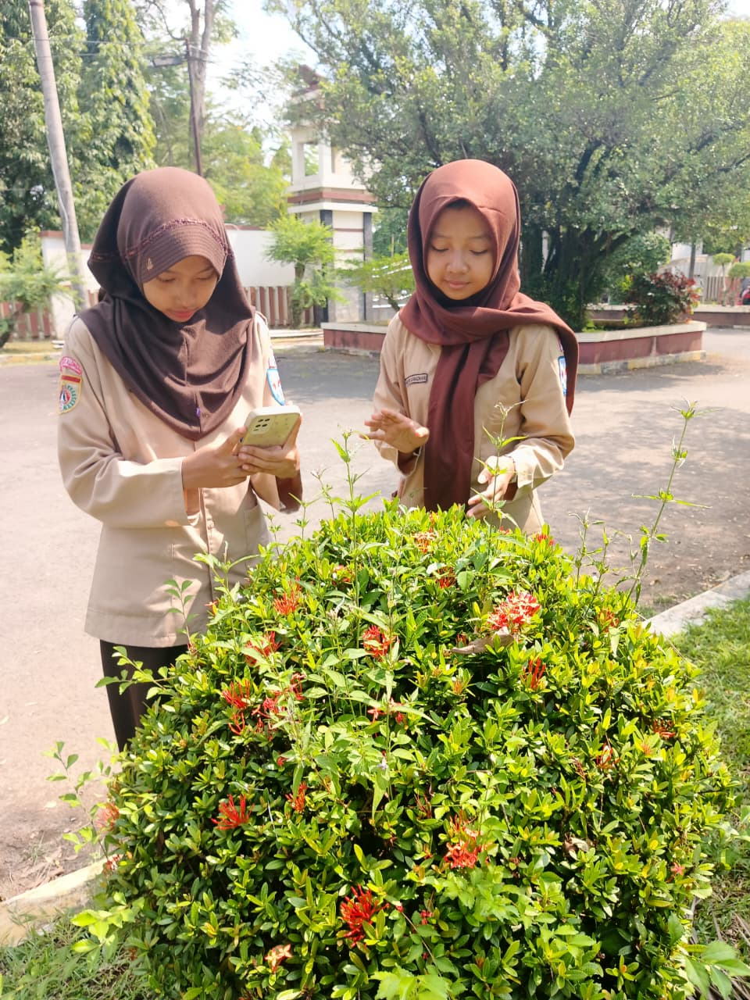

Bunga asoka (Ixora) adalah tanaman perdu berbunga yang melambangkan keindahan dan kedamaian. Ciri khasnya adalah memiliki kelompok bunga kecil yang rapat dalam satu tandan (menyerupai payung) dengan warna yang cerah seperti merah, jingga, kuning, atau merah muda. Daunnya berbentuk lonjong dengan permukaan yang mengkilap.
Daun berbentuk lanset (meruncing), bunga berwarna putih, buah bulat kecil, dan memiliki akar tunggang yang kuat.
Tumbuh subur di iklim tropis Asia Tenggara dengan kebutuhan sinar matahari penuh.
Bermanfaat untuk sebagai tanaman hias/pagar, penyerap polusi udara, pencegah erosi, serta sumber antioksidan untuk kesehatan
Perkembangbiakan yang paling efektif melalui stek batang dan cangkok; bisa juga melalui biji namun pertumbuhannya lebih lambat
Bunga asoka adalah tanaman hias perdu yang tangguh, estetis, dan mudah dirawat. Selain mempercantik taman dengan bunganya yang cerah, asoka berfungsi sebagai penyedia nektar bagi serangga penyerbuk dan memiliki potensi manfaat kesehatan tradisional.
⬅ Kembali ke Home